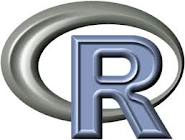

Markdown, Knitr, and Slidify
state-of-the-art report/presentation generation in R
state-of-the-art report/presentation generation in R
txt <- rep(c("E", "a", "s", "y"), 10) grid.text(txt, 0.5 + sin(2 * pi * seq_along(txt)/length(txt))/2.2, 0.5 + cos(2 * pi * seq_along(txt)/length(txt))/2.2, gp = gpar(fontsize = 30, col = rainbow(length(txt))))
All tools are available for free.
slidify: HTML5 slide generator
Rstudio: excellent support for knitr.

Ok, use iris.
head(iris)
## Sepal.Length Sepal.Width Petal.Length Petal.Width Species ## 1 5.1 3.5 1.4 0.2 setosa ## 2 4.9 3.0 1.4 0.2 setosa ## 3 4.7 3.2 1.3 0.2 setosa ## 4 4.6 3.1 1.5 0.2 setosa ## 5 5.0 3.6 1.4 0.2 setosa ## 6 5.4 3.9 1.7 0.4 setosa
Of course, you may use data from your own experiment.
summary of iris
summary(iris)
## Sepal.Length Sepal.Width Petal.Length Petal.Width ## Min. :4.30 Min. :2.00 Min. :1.00 Min. :0.1 ## 1st Qu.:5.10 1st Qu.:2.80 1st Qu.:1.60 1st Qu.:0.3 ## Median :5.80 Median :3.00 Median :4.35 Median :1.3 ## Mean :5.84 Mean :3.06 Mean :3.76 Mean :1.2 ## 3rd Qu.:6.40 3rd Qu.:3.30 3rd Qu.:5.10 3rd Qu.:1.8 ## Max. :7.90 Max. :4.40 Max. :6.90 Max. :2.5 ## Species ## setosa :50 ## versicolor:50 ## virginica :50 ## ## ##
Old-fashioned statistical test.
library(reshape2) library(plyr) iris2 <- melt(iris)
## Using Species as id variables
dlply(iris2, .(variable), function(x) pairwise.t.test(x$value, x$Species))
## $Sepal.Length ## ## Pairwise comparisons using t tests with pooled SD ## ## data: x$value and x$Species ## ## setosa versicolor ## versicolor 1.8e-15 - ## virginica < 2e-16 2.8e-09 ## ## P value adjustment method: holm ## ## $Sepal.Width ## ## Pairwise comparisons using t tests with pooled SD ## ## data: x$value and x$Species ## ## setosa versicolor ## versicolor < 2e-16 - ## virginica 9.1e-10 0.0031 ## ## P value adjustment method: holm ## ## $Petal.Length ## ## Pairwise comparisons using t tests with pooled SD ## ## data: x$value and x$Species ## ## setosa versicolor ## versicolor <2e-16 - ## virginica <2e-16 <2e-16 ## ## P value adjustment method: holm ## ## $Petal.Width ## ## Pairwise comparisons using t tests with pooled SD ## ## data: x$value and x$Species ## ## setosa versicolor ## versicolor <2e-16 - ## virginica <2e-16 <2e-16 ## ## P value adjustment method: holm ## ## attr(,"split_type") ## [1] "data.frame" ## attr(,"split_labels") ## variable ## 1 Sepal.Length ## 2 Sepal.Width ## 3 Petal.Length ## 4 Petal.Width
library(ggplot2) ggplot(iris2, aes(variable, value, colour = Species)) + geom_boxplot() + theme_grey(base_size = 24)
You can knit text, codes, and pictures in a markdown file.
Here is the markdown file that generates this slide.
Then, all you need is:
knit2html("whyslidify.Rmd")
slidify("whyslidify.Rmd")
install.packages("devtools") library(devtools) install_github("slidify", "ramnathv") install_github("knitr", "yihui") install_github("whisker", "edwindj") install_github("markdown", "rstudio")